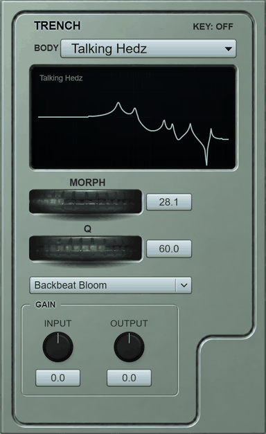

TRENCH is a musical filter, supplied as a module. It morphs through complex filter spaces in real time: choose a body, turn Morph and Q, and let a movement play it. There is no rear panel.
The unit in operation0:13 loop · the unit as supplied

Demonstration recordingsDry is the sound before the unit. Processed is after. Nothing else was added.
Brass0:13
Brass. Morph climbs through the horn and comes back down, twice, with the Q up. The resonance belongs to the unit. The source did not do that.
Reese bass0:13
A reese bass. For four seconds the unit sits on the low end. Then Morph goes all the way up and the bass turns to air. It comes back. The bass was the same the whole time.
idle
Recorded through the unit and nothing else.
Specifications
Filter: twelfth order, six sections in series, four authored corners per body across Morph and Q. Controls: Body, Morph, Q, Movement, KEY, Input, Output. Saturation: a Mackity stage after the filter. Movement: tempo-locked, each preset with its own length; a MIDI note restarts it. Rear panel: none. Power: none required. Format: VST3 for Windows x64. The front panel is shown above as it runs. TRENCH is a musical filter.